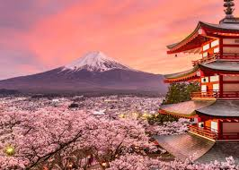

Tokyo
Tokyo is special to me because it is full of anime series that I love. I wanted to visit a lot of anime statues especially One Piece.
Flight
To get to Tokyo from Quezon City, you'll likely fly into either Narita (NRT) or Haneda (HND) Airport, and then take a train to central Tokyo.
Other places to visit.
- Kyoto : Famous for its beautiful temples, shrines, and geisha districts.
- Osaka : A lively city known for its street food, nightlife, and Osaka Castle.
- Nara : Home to friendly deer and the historic Todai-ji Temple.
- Hiroshima : A city of history and peace, with the Atomic Bomb Dome and Miyajima Island.
- Sapporo : Famous for its winter festival, ramen, and scenic landscapes.
- Nagoya : A modern city with historic sites like Nagoya Castle.
- Fukuoka : Known for its delicious ramen and laid-back coastal vibe.